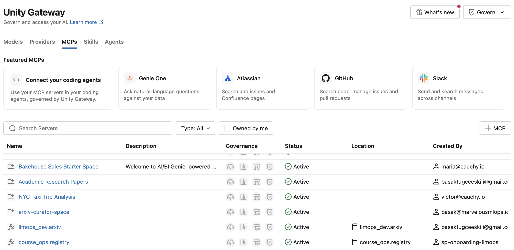

Agents & orchestration
What is an agent? Workflows, tool control and agentic RAG.
LECTURE 3
28 October 2026
LLMOps with Databricks

Today we move from retrieval to agents that can decide when to use retrieval and other tools.
LECTURE 3
What is an agent? Workflows, tool control and agentic RAG.
Custom tools, Model Context Protocol and Databricks MCP.
Give an agent access to structured data through Genie.
Persist conversation history and read it back on the next turn.
OPENAI AGENTS SDK
An agent is an LLM configured with instructions and tools.
The system prompt defines the agent’s role and how it should respond.
The language model and settings used to generate responses and tool requests.
Functions or APIs the model can request to retrieve information or perform actions.
Handoffs, guardrails and structured outputs extend the agent configuration.
Source: OpenAI Agents SDK: Agents
ANTHROPIC: AGENTIC SYSTEMS
ORCHESTRATION
ANTHROPIC’S DISTINCTION (PARAPHRASED)
The distinction is who directs the process and tool use.
The LLM follows a predefined process.
The LLM directs the process as it runs.
OUR COURSE DEFINITION
Following the OpenAI Agents SDK model of an agent.
The LLM chooses the tool call: agent.
Application code predetermines the tool call: workflow.
The application executes tool requests in both cases. This is our course distinction, not a universal definition.
RAG
User question → application retrieves chunks → application builds a prompt → model answers.
Retrieval is fixed and happens outside the model.
User question → model decides to call search_papers() → tool returns chunks → model answers.
The model controls when and how retrieval happens.
Our pgvector search remains the same. The change is the interface: instead of always retrieving first, we expose search as a tool that an agent can call when appropriate.
We now connect the agent to tools, first directly and then through MCP.
MODEL CONTEXT PROTOCOL
A standard connection between an AI application and external capabilities.
Callable functions that retrieve information or perform actions.
search_papers(query)Content the application can read and supply as context.
Document or file contentsReusable prompt templates exposed by the server.
Research summary templateMCP IN ACTION
Adapted from Elastic Security Labs: MCP tool calls. Approval depends on the host’s policy.
IMPLEMENTATION
Asks a research question.
Chooses search_papers.
Runs pgvector hybrid search.
Uses results and cites evidence.
search_papers(query, num_results, year_filter)
→ LakebasePgVectorManager.hybrid_search(...)
→ chunks, metadata, scores
→ grounded responseThe tool should expose a narrow contract. The agent does not receive database credentials or arbitrary SQL. It supplies a query and receives relevant chunks with metadata that can support citations.
MCP
| Question | MCP server | Custom function |
|---|---|---|
| Setup | Connect to an existing server. | Write and register Python code. |
| Reuse | One server can support many agents. | Usually designed for one application. |
| Security | Authentication and authorization can be managed centrally. | The application owns the security implementation. |
| Customization | Use the capabilities the server exposes. | Implement custom business logic directly. |
MCP is valuable when a capability should be reused across applications. Custom functions remain the better choice when we need full control over logic and data access.
DATABRICKS
Databricks provides managed MCP endpoints for common platform capabilities.
| Server | Purpose | Current route |
|---|---|---|
| AI Search | Query a Databricks AI Search index. | /api/2.0/mcp/ai-search/{catalog}/{schema}/{index} |
| Genie | Ask natural-language questions over a Genie Space. | /api/2.0/mcp/genie/{space_id} |
| Unity Catalog functions | Invoke registered functions. | /api/2.0/mcp/functions/{catalog}/{schema} |
| DBSQL | Run permitted SQL operations. | /api/2.0/mcp/sql |
The legacy vector-search route may remain available for compatibility; new material should use AI Search terminology.
Managed MCP reduces the amount of infrastructure we need to build. Permissions still matter: the agent only receives capabilities that its identity is allowed to use.

The Unity Gateway MCPs tab shows available integrations and the course’s Genie spaces and Unity Catalog functions.
MCP
Agents use a common protocol across different systems.
One server can expose a capability to many agents.
The platform can operate the server and its connections.
Authentication, authorization, and scaling are part of the platform design.
MCP does not remove the need for good tool design. It gives us a consistent connection layer so agents can discover and invoke tools safely.
UNITY CATALOG
CREATE FUNCTION llmops_dev.arxiv.add_numbers(a DOUBLE, b DOUBLE) RETURNS DOUBLE LANGUAGE PYTHON RETURN a + b;server = "/api/2.0/mcp/functions/llmops_dev/arxiv"; client discovers the function; model can call itUse direct SQL when the workflow is fixed. Use UC Functions MCP when multiple agents need governed, discoverable functions.
A Unity Catalog function is governed reusable logic. Databricks can expose it through MCP so an agent can discover and invoke approved functions without embedding database-specific details in every application. MCP is most useful when the same functions should be shared across agents and clients.
THE GENIE FAMILY
For technical users
Writes code and works
within the lakehouse.
For business users
Explore data, dashboards
and apps in one place.
For business & technical users
Answer domain-specific
questions over curated data.
GENIE AGENT
Ask a data question and receive SQL, result tables and visualizations.
Unity Catalog table:{catalog}.{schema}.arxiv_papers
SQL warehouse:wh-ops-llmops
Configure instructions, column descriptions and example SQL.
Explain terms such as “recent papers” and which publication date to use.
Course setup: notebook 3.2b. APIs and configuration still use names such as space_id and genie_space_id.
Databricks: Genie Agents
AGENT ORCHESTRATION
The outer agent chooses which capability fits the question.
User question + instructions
The model selects a tool and uses its result to answer.
Structured questions over the curated paper table.
“How many papers were published each month?”
Retrieve relevant passages from parsed papers.
“What do these papers say about attention?”
Databricks: Genie Agent MCP · Course implementation: notebook 3.2.
COURSE IMPLEMENTATION
from databricks.sdk import WorkspaceClient
from arxiv_curator.mcp import create_mcp_tools
import asyncio
w = WorkspaceClient()
genie_url = (
f"{w.config.host}/api/2.0/mcp/genie/"
f"{cfg.genie_space_id}"
)
genie_tools = asyncio.run(create_mcp_tools(w, [genie_url]))
# One agent, two capabilities
tools = [search_papers_tool, *genie_tools]create_mcp_tools is our course helper: it discovers tool schemas and creates callables for the agent loop.
Notebook 3.2 provides cfg and search_papers_tool. The Genie Agent and its underlying data must be accessible to the calling identity.
LAKEBASE FOR AGENT MEMORY
Conceptual architecture adapted from the supplied diagram. Distillation extracts useful knowledge from history; deduplication consolidates repeated memories.
THE COURSE IMPLEMENTATION
No distillation in this example. We read the stored messages back by session ID. Notebook 3.3: save_messages() and load_messages().
HOMEWORK
MCP, tools, and agents
Next: build reliable agent applications around the retrieval layer.
Invite questions about when to use a workflow, when to use an agent, and how the pgvector tool fits into the architecture.